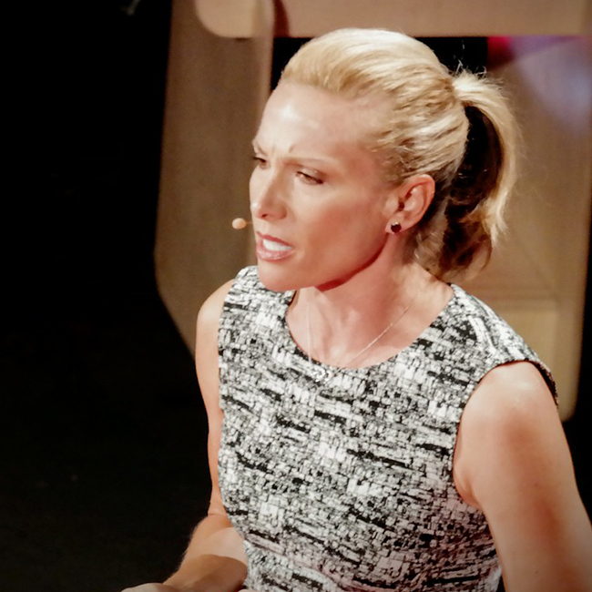
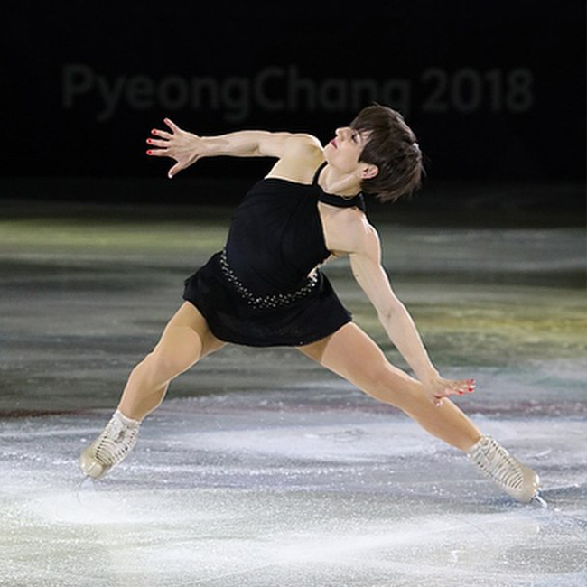
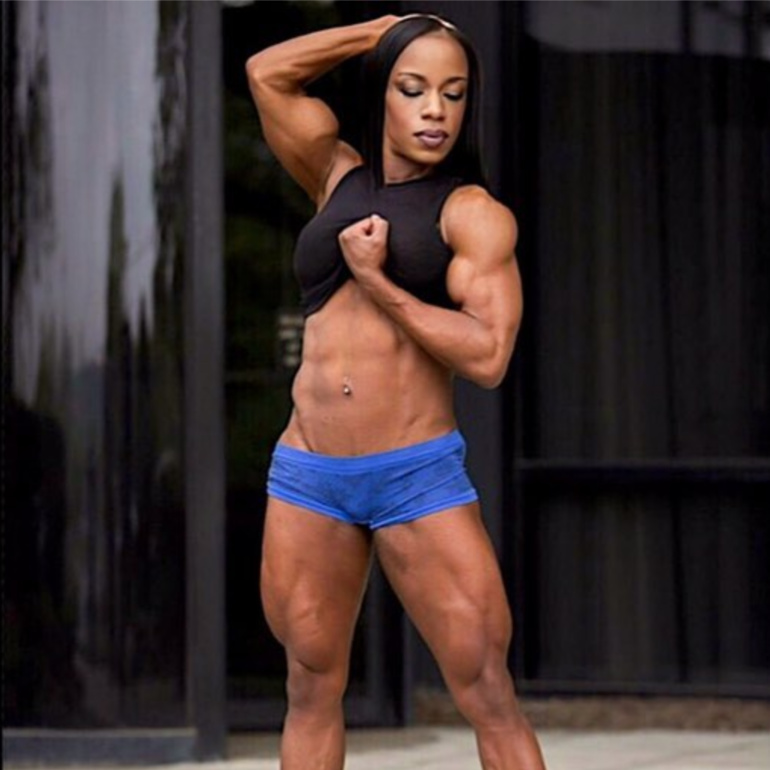
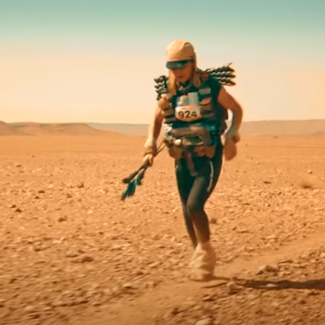
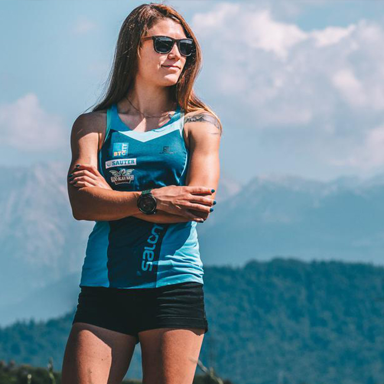
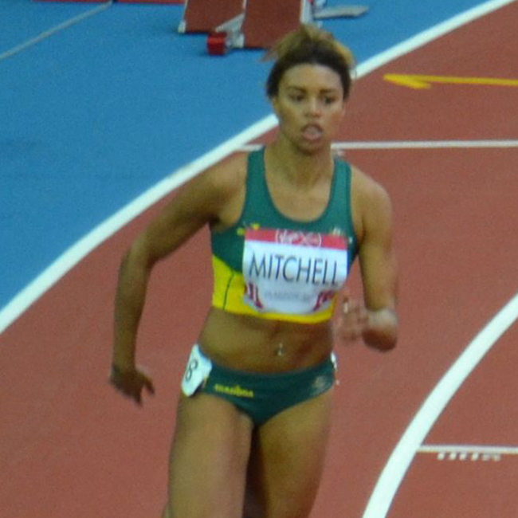
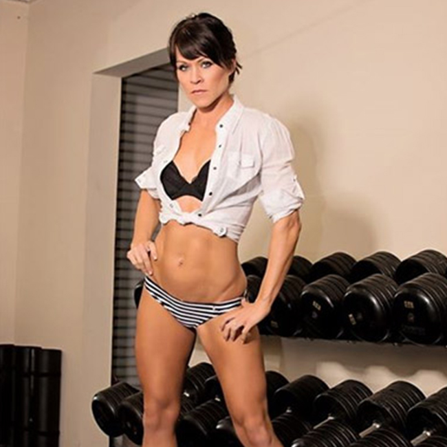
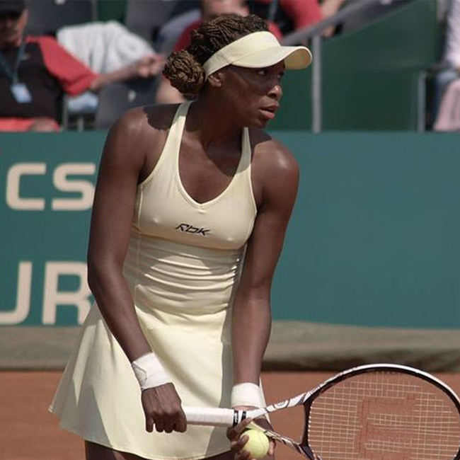

Great vegan athletes
on plant-based diet – women
July 20 2021,
Jelena Cvetković Š.
FEMALE ELITE ATHLETS. People think that veganism and sport cannot go hand in hand. Here are female athletes on plant-based diet and who are absolutely dominating their sport.
Some people are having a vegan diet because of the love of animals, others because of health and the desire for a healthy diet, some because of the impact on the environment ... But there are definitely many professional athletes among them. Vegan diet is compatible with being an athlete as long as you plan your diet well to ensure the necessary intake of nutrients and vitamins.
Dotsie Bausch,
professional cyclist
Pro cyclist Dotsie Bausch, who is also featured in “The Game Changers,” went vegan in 2009. She gave up meat and dairy in order to be a better advocate for animals. Bausch went on to win a silver medal at the 2012 Olympics.
Tia Blanco,
professional surfer
Professional surfer and two-time International Surfing Association (ISA) gold medalist. Thanks to the influence of her vegetarian mom, Blanco has never eaten red meat in her life.
Meagan Duhamel,
figure skater
Canadian figure skater Meagan Duhamel three Olympic medals to her name. She transitioned to a vegan diet in 2008 after reading the diet book “Skinny Bitch.” “It’s simply healthier. Vegans eat more fiber, fruits and vegetables, therefore getting more vitamins and minerals into their bodies.”
Jahina Malik,
body builder
Award-winning body builder and personal trainer who made history as the 1st ever vegan-since-birth International Federation of Bodybuilding and Fitness professional, Women’s Bodybuilding Division.
Fiona Oakes,
world record marathon runner
She went vegan at the age of six. ”I didn’t realize the personal health benefits of being vegan, the positive impact on the planet, and the injustice of the unfair distribution of resources to other humans by feeding their grain to animals. I just didn’t want to be party to the harming of these beautiful creatures.”
Ana Čufer,
mountain runner
She made a successful attempt at the record for the ascent and descent of Triglav, Slovenia’s highest mountain at 2864 metres. She completed the feat in 2 hours 52 minutes.
Morgan Mitchell,
sprinter
She vegan in 2014 after watching a documentary about animal cruelty. The “Game Changers”. She said: “I recover a lot quicker than I used to. It’s easier to keep my weight down and I haven’t been sick at all!”
Seba Johnson,
Olympic skier
Seba is vegan since birth. She was raised in a family that abstained from consuming animal products. “Growing up without dairy was the natural thing for me to do,”
She was the first-ever Black female skier to compete at the Olympics.
Alex Morgan,
professional soccer player
She told Reuters she went vegan “because it didn’t feel fair to have a dog [she adores], and yet eat meat all the time.”
Heather Mitts,
professional soccer player
 After ditching meat and dairy, she said she noticed major improvements in her overall quality of life. “The more I learned about veganism the more I was convinced that it was the right lifestyle to lead. The only regret I have is that I didn’t do it sooner,” she wrote on Instagram.
After ditching meat and dairy, she said she noticed major improvements in her overall quality of life. “The more I learned about veganism the more I was convinced that it was the right lifestyle to lead. The only regret I have is that I didn’t do it sooner,” she wrote on Instagram.
Yolanda Presswood,
powerlifter
Yolanda is vegan, and has been since 2010.“I am vegan for the animals all day, everyday. I do not eat animal products or wear them or use them period. “
Venus Williams,
tennis player
After being diagnosed with Sjögren’s syndrome, an autoimmune disease, which causes excessive fatigue and joint pain, she started with a vegan diet on the recommendation of her doctor.
“I was diagnosed with an autoimmune disease, and I wanted to maintain my performance on the court. Once I started, I fell in love with the concept of fuelling your body in the best way possible [through raw, vegan food].”
Photo credits:
Opening Photo: Ana Čufer (Photo: Jan Lukanović, https://newsbeezer.com/sloveniaeng/to-triglav-and-back-in-less-than-three-hours-on-a-vegan-diet-video/)
Dotsie Bausch (Photo: "Olympic Level Compassion | Dotsie Bausch" by TEDxChapmanU is licensed with CC BY-NC-ND 2.0. To view a copy of this license, visit https://creativecommons.org/licenses/by-nc-nd/2.0/)
Tia Bianco (Photo: "Tia Blanco-1" by troy_williams is licensed with CC BY-NC-ND 2.0. To view a copy of this license, visit https://creativecommons.org/licenses/by-nc-nd/2.0/)
Meagan Duhamel (Photo: David W. Carmichael, CC BY 3.0 <https://creativecommons.org/licenses/by/3.0>, via Wikimedia Commons)
Jahina Malik (Photo: screenshot from https://www.livingvegan.com/eight-ultra-fit-vegan-women-ready-to-represent/)
Fiona Oakes (Photo: screenschot from https://www.youtube.com/watch?v=rPovf1-E8xg)
Ana Čufer (Photo: Jan Lukanović, https://newsbeezer.com/sloveniaeng/to-triglav-and-back-in-less-than-three-hours-on-a-vegan-diet-video/)
Morgan Mitchell (Photo: Daniel from Melrose, United Kingdom, CC BY 2.0 <https://creativecommons.org/licenses/by/2.0>, via Wikimedia Commons
Alex Morgan (Photo: Jamie Smed, CC BY 2.0 <https://creativecommons.org/licenses/by/2.0>, via Wikimedia Commons)
Heather Mitts (Photo: Johnmaxmena2, Public domain, via Wikimedia Commons)
Yolanda Presswood (Photo: https://www.veganbodybuilding.com/profile-legacy/yolanda-presswood/)
Venus Williams (Photo: Anna Bialkowska, CC BY-SA 2.0 <https://creativecommons.org/licenses/by-sa/2.0>, via Wikimedia Commons)